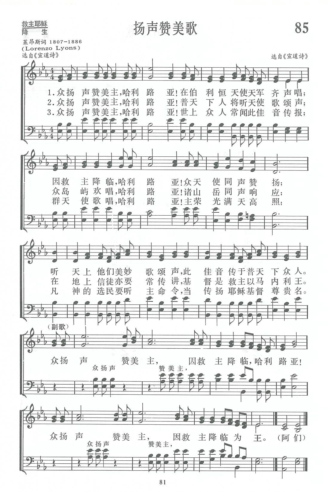
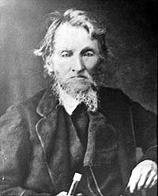

|
|
|
|
|
085首 《扬声赞美歌》 |
|
https://www.zanmeishige.com/tab/13716.html?songbook=1&index=85

|
|
|
|
|


https://www.youtube.com/watch?v=V5f4svYka6c - 揚聲讚美歌.眾揚聲讚美主Sing it out with a shout天主教聖誕期聖歌Chinese Catholic
Christmas Hymns
https://www.youtube.com/watch?v=ZFRf_bI1XZk
| Text: | Sing it out with a shout |
| Author: | R. L. |
| Tune: | [Sing it out with a shout] |
| Composer: | R. Lowry |
| Short Name: | Robert Lowry |
| Full Name: | Lowry, Robert, 1826-1899 |
| Birth Year: | 1826 |
| Death Year: | 1899 |

Robert Lowry was born in Philadelphia, March 12, 1826. His fondness for music was exhibited in his earliest years. As a child he amused himself with the various musical instruments that came into his hands. At the age of seventeen he joined the First Baptist Church of Philadelphia, and soon became an active worker in the Sunday-school as teacher and chorister.
At the age of twenty-two he gave himself to the work of the ministry, and entered upon a course of study at the University of Lewisburg, Pa. At the age of twenty-eight he was graduated with the highest honors of his class. In the same year of his graduation, he entered upon the work of the ministry. He served as pastor at West Chester, Pa., 1851-1858; in New York City, 1859-1861; in Brooklyn, 1861-1869; in Lewisburg, Pa., 1869-1875. While pastor at Lewisburg, he was also professor of belles lettres in the University, and received the honorary degree of D. D. in 1875.
He then went to Plainfield, N. J., where he became pastor of Park Avenue Church. In each of these fields his work was crowned with marked success.
Dr. Lowry was a man of rare administrative ability, a most excellent preacher, a thorough Bible student, and whether in the pulpit or upon the platform, always a brilliant and interesting speaker. He was of a genial and pleasing disposition, and a high sense of humor was one of his most striking characteristics. Very few men had greater ability in painting pictures from the imagination. He could thrill an audience with his vivid descriptions, inspiring others with the same thoughts that inspired him.
His melodies are sung in every civilized land, and many of his hymns have been translated into foreign tongues. While preaching the Gospel, in which he found great joy, was his life-work, music and hymnology were favorite studies, but were always a side issue, a recreation.
In the year 1880, he took a rest of four years, visiting Europe. In 1885 he felt that he needed more rest, and resigned his pastorate at Plainfield, and visited in the South and West, also spending some time in Mexico. He returned, much improved in health, and again took up his work in Plainfield.
On the death of Wm. B. Bradbury, Messrs. Biglow & Main, successors to Mr. Bradbury in the publishing business, selected Dr. Lowry for editor of their Sunday-school book, Bright Jewels, which was a great success. Subsequently Dr. W. Doane was associated with him in the issue of the Sunday-school song book, Pure Gold, the sales of which exceeded a million copies. Then came Royal Diadem, Welcome Tidings, Brightest and Best, Glad Refrain, Good as Gold, Joyful Lays, Fountain of Song, Bright Array, Temple Anthems, and numerous other volumes. The good quality of their books did much to stimulate the cause of sacred song in this country.
When he saw that the obligations of musical editorship were laid upon him, he began the study of music in earnest, and sought the best musical text-books and works on the highest forms of musical composition. He possessed one of the finest musical libraries in the country. It abounded in works on the philosophy and science of musical sounds. He also had some musical works in his possession that were over one hundred and fifty years old.
One of his labors of love some years ago was an attempt to reduce music to a mathematical basis. On the established fact that Middle C has two hundred and fifty-six vibrations per second, he prepared a scale and went to work on the rule of three. After infinite calculation and repeated experiments, he carried it far enough to discover that it would not work.
A reporter once asked him what was his method of composition — "Do you write the words to fit the music, or the music to fit the words?" His reply was, "I have no method. Sometimes the music comes and the words follow, fitted insensibly to the melody. I watch my moods, and when anything good strikes me, whether words or music, and no matter where I am, at home or on the street, I jot it down. Often the margin of a newspaper or the back of an envelope serves as a notebook. My brain is a sort of spinning machine, I think, for there is music running through it all the time. I do not pick out my music on the keys of an instrument. The tunes of nearly all the hymns I have written have been completed on paper before I tried them on the organ. Frequently the words of the hymn and the music have been written at the same time."
The Doctor frequently said that he regarded "Weeping Will Not Save Me" as the best and most evangelistic hymn he ever wrote. The following are some of his most popular and sweetest gospel melodies: "Shall We Gather at the River?," "One More Day's Work for Jesus," "Where is My Wandering Boy To-night?," "I Need Thee Every Hour," "The Mistakes of My Life," "How Can I Keep from Singing?," "All the Way My Saviour Leads Me," "Saviour, Thy Dying Love," "We're Marching to Zion," etc. "Shall We Gather at the River?" is perhaps, without question, the most widely popular of all his songs. Of this Mr. Lowry said: "It is brass band music, has a march movement, and for that reason has become popular, though for myself I do not think much of it." Yet he tells us how, on several occasions, he had been deeply moved by the singing of that hymn, "Going from Harrisburg to Lewisburg once I got into a car filled with half-drunken lumbermen. Suddenly one of them struck up, "Shall We Gather at the River?" and they sang it over and over again, repeating the chorus in a wild, boisterous way. I did not think so much of the music then as I listened to those singers, but I did think that perhaps the spirit of the hymn, the words so flippantly uttered, might somehow survive and be carried forward into the lives of those careless men, and ultimately lift them upward to the realization of the hope expressed in my hymn." "A different appreciation of it was evinced during the Robert Raikes' Centennial. I was in London, and had gone to meeting in the Old Bailey to see some of the most famous Sunday-school workers in the world. They were present from Europe, Asia, and America. I sat in a rear seat alone. After there had been a number of addresses delivered in various languages, I was preparing to leave, when the chairman of the meeting announced that the author of "Shall We Gather at the River?" was present, and I was requested by name to come forward. Men applauded and women waved their handkerchiefs as I went to the platform. It was a tribute to the hymn; but I felt, when it was over, that, after all, I had perhaps done some little good in the world, and I felt more than ever content to die when God called." On Children's Day in Brooklyn, in 1865, this song was sung by over forty thousand voices.
While Dr. Lowry said, "I would rather preach a gospel sermon to an appreciative, receptive congregation than write a hymn," yet in spite of his preferences, his hymns have gone on and on, translated into many languages, preaching and comforting thousands upon thousands of souls, furnishing them expression for their deepest feelings of praise and gratitude to God for His goodness to the children of men. What he had thought in his inmost soul has become a part of the emotions of the whole Christian world. We are all his debtors.
Rev. Robert Lowry, D. D., died at his residence in Plainfield, K J., November 25, 1899. Dead, yet he lives and his sermons in gospel song are still heard and are doing good. Dr. Lowry was a great and good man, and his life, well spent, is highly worthy of a place among the world's greatest gospel song and hymn writers.
-- Biography of Gospel Song and Hymn Writers
Tune Information
| Title: | [Sing it out with a shout] |
| Composer: | Robert Lowry, 1826-1899 |
| Meter: | Irreg. with Ref. |
| Incipit: | 34555 55515 54335 |
| Source: | Hymn Service Book #1 |
| Copyright: | Public Domain |
| Short Name: | Lorenzo Lyons |
| Full Name: | Lyons, Lorenzo, 1807-1886 |
| Birth Year: | 1807 |
| Death Year: | 1886 |
Lorenzo Lyons also known as Makua Laiana, missionary to Hawaii.

第85首 扬声赞美歌 _《宣道诗》 V SING IT OUT WITH A SHOUT
经文：“航海的和海中所有的……旷野和其中的城邑……都当扬声”(赛42：10—11)。
这首赞美诗的词、曲出处不详，但知道它是从《宣道诗》中选来。《宣道诗》是1940年由刘福祥牧师编辑出版，后又在香港出版过，都没有注明其中所选入的圣诗和曲调的出处。
原诗的英文首句为：“Sing it out with a shout”，意为“要用高喊的方法将欢乐唱出来”。的确，乐曲情绪非常高昂，节奏鲜明，使人唱时，赞美的心声易于表达。并且和声简单，只用了主和弦，属和弦及下属和弦，曲调的音域也适合一般人歌唱。
https://www.xueshengshi.com/?p=5439